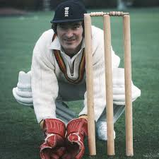
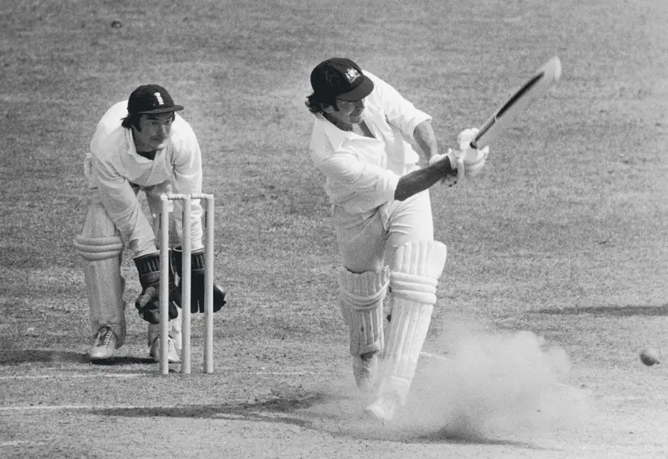

Alan Knott
Role: Wicketkeeper-Batsman
Bio: Alan Knott is regarded as one of the finest wicketkeeper-batsmen in the history of cricket. Known for his agile keeping and solid batting technique, he was a key player for England in the 1970s and 1980s.
Career Stats
| Format | Matches | Innings | Not Outs | Runs | High Score | Average | Strike Rate | 100s | 50s | Wickets | Best Bowling |
|---|---|---|---|---|---|---|---|---|---|---|---|
| Test | 95 | 189 | 16 | 4384 | 162 | 32.75 | - | 1 | 25 | 38 | 4/32 |
| ODI | 120 | 114 | 14 | 2478 | 100* | 26.10 | - | 1 | 20 | - | - |
Memorable Moments

Knott's incredible wicketkeeping performance during the 1975 Ashes series, showcasing his exceptional skills behind the stumps.
Scoring a memorable century against Australia at Lord's, solidifying his reputation as a reliable batsman.